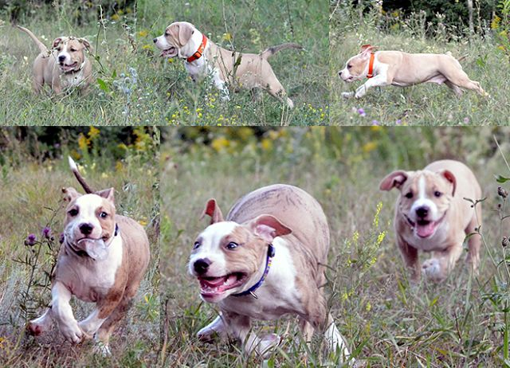

And Gotha permitted her litter to go to the garden of Eden
The first cub is Biscotto della Fortuna
And the second cub is Bonbon di Latte Macchiato
And the third cub is Beata Dolce Marmellata
And the fourth cub is Baffo e Strishe
And the fifth cub is Bombolone del Amore
